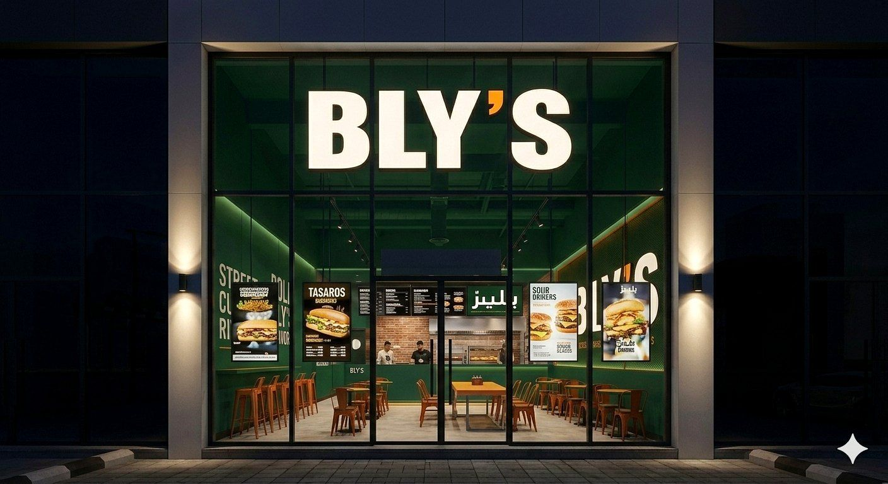
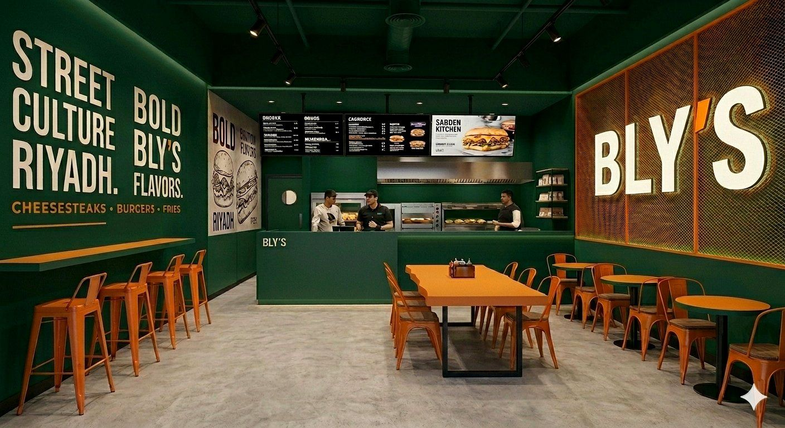
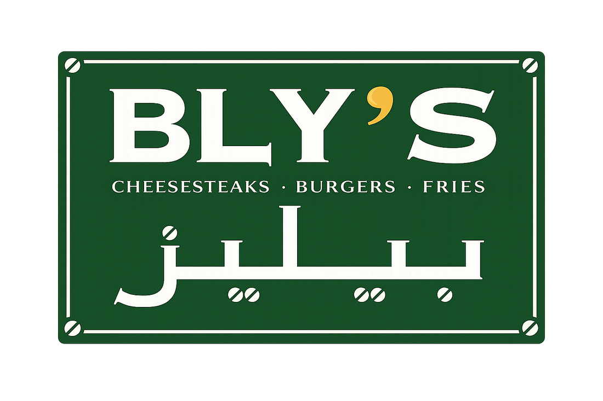
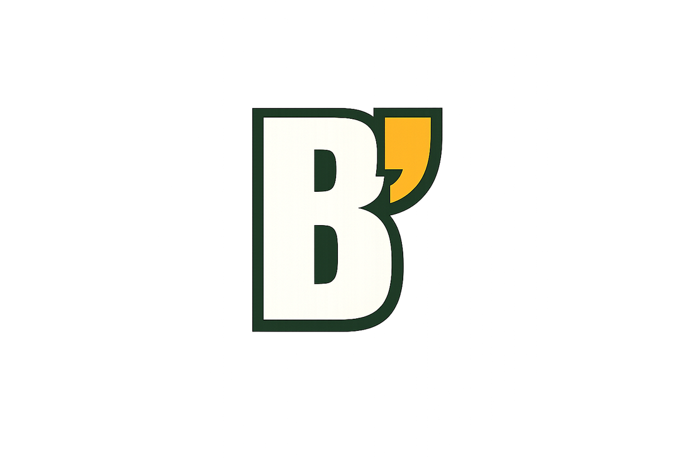
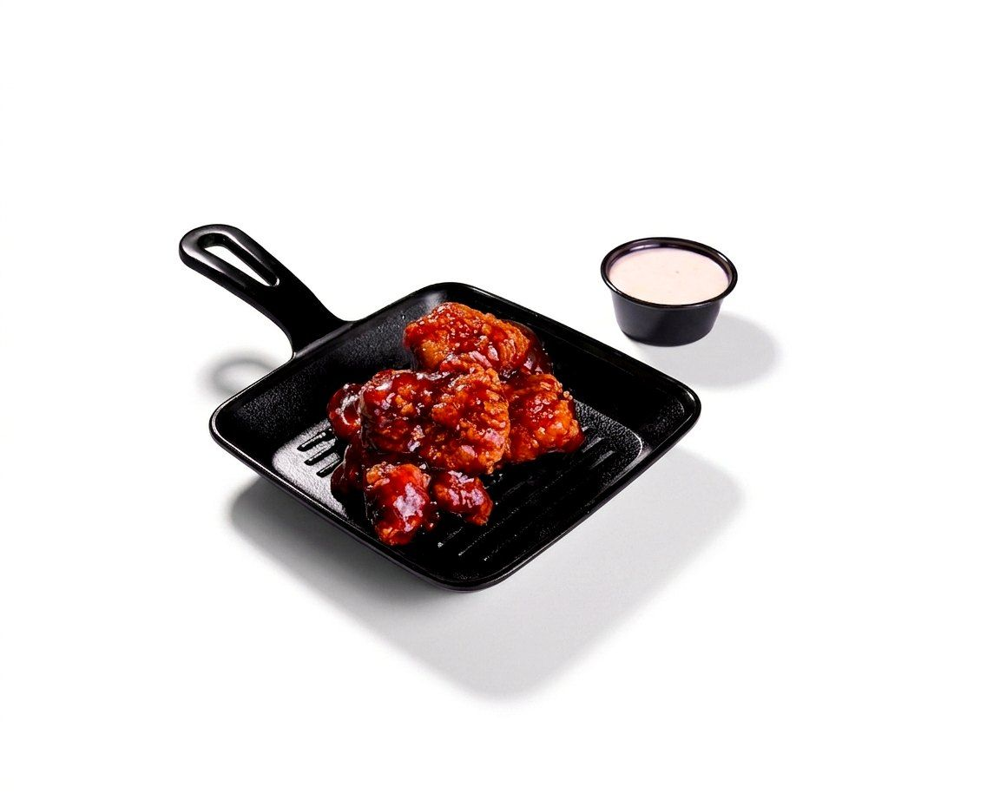
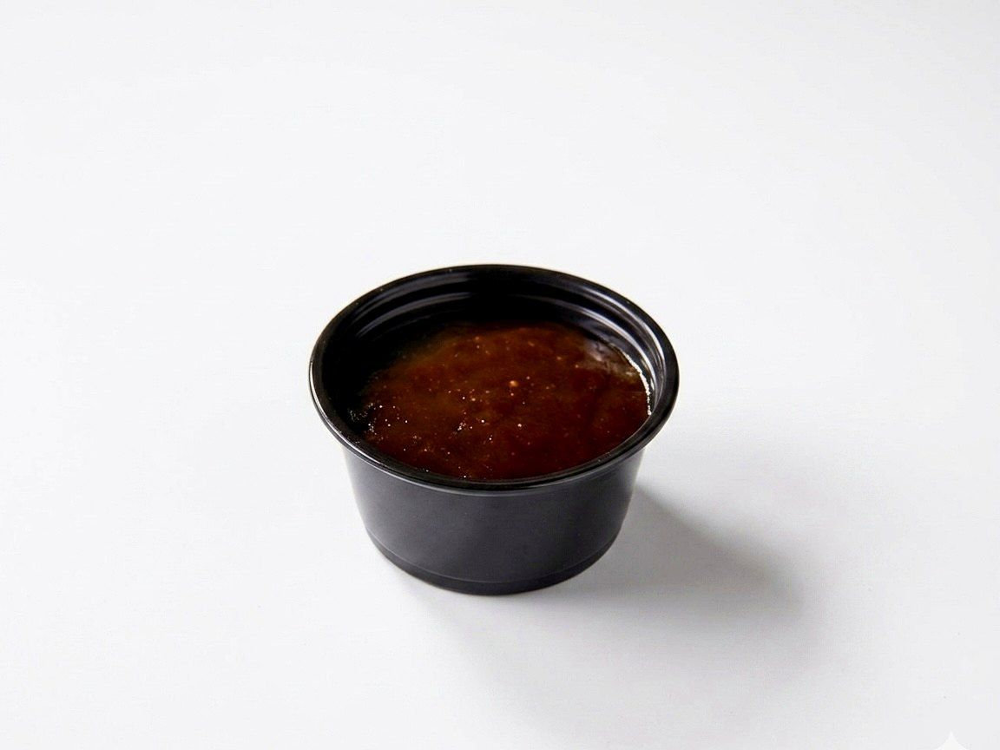
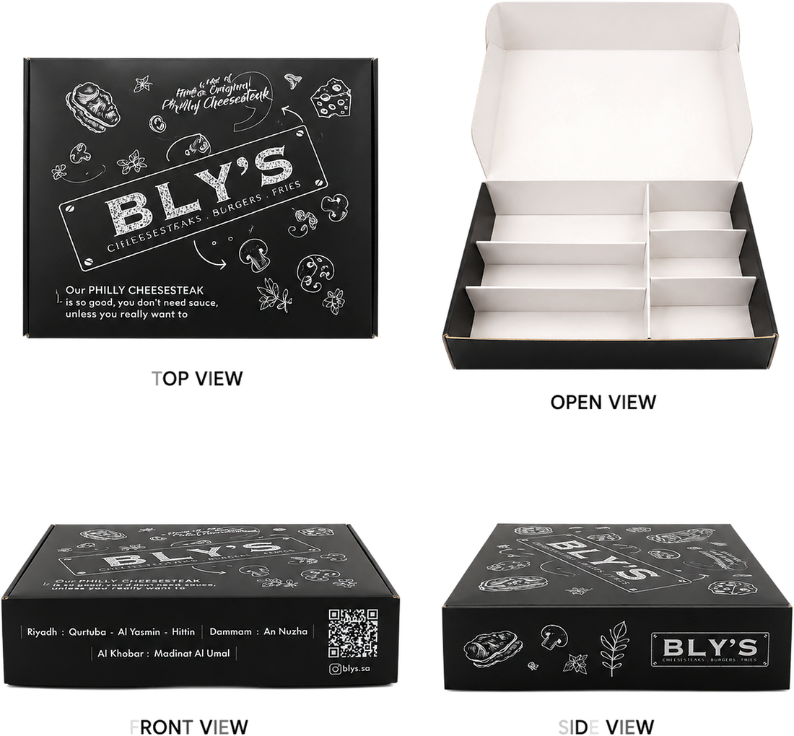

01
Brand Story
& Foundation
& Foundation

BLY'S is Saudi Arabia's original cheesesteak-focused restaurant. While competitors offer cheesesteaks as one menu item, BLY'S was built around the cheesesteak itself — premium ingredients, bold flavor, and a genuine connection to Philadelphia's most iconic sandwich.
From day one the rule was simple: no shortcuts, no compromises, no watered-down version of the original. Carefully selected Black Angus beef, authentic preparation, and an unmistakably urban identity in every branch.
Before BLY'S was a restaurant, it was a sandwich shared among family and friends. The founder spent years perfecting an authentic Philly cheesesteak at home. The constant question — "when are you making cheesesteaks again?" — became a business. In 2021 the vision was born.
Become the most trusted, recognized cheesesteak brand in Saudi Arabia through authentic flavor and consistent quality.
The leading cheesesteak brand in the GCC and the benchmark for authentic American sandwich culture.
Introduce and grow authentic Philly cheesesteak culture in Saudi Arabia, made the right way.
Primary archetype — The Craftsman: obsessed with doing it right, no shortcuts. Secondary — The Urban Explorer: street-smart, modern, always moving.
Real ingredients. Real methods. Real Philly inspiration.
100% Black Angus, hand-sliced in-house. No shortcuts.
Riyadh nights, bold environments, street-food energy.
Built for sharing — groups, catering, social dining.


Primary
IconNever add drop-shadows or glows under the logo or any element.
Only approved brand colors. Never tint outside the palette.
Never stretch, squeeze, angle, or outline the wordmark.





22–45 · Values authenticity & quality. Wants the closest thing to a real Philly cheesesteak.
18–35 · Social, trend-driven, drawn to BLY'S urban identity. Shares the experience.
18–40 · Bold flavor after dark. Riyadh nights, delivery, drive-thru energy.
25–45 · Premium expectation, consistent experience, trusted brand.
Friends & family — built for sharing, catering, and social dining.
 Bar Stools
Bar Stools Dining Chairs
Dining Chairs Long Table
Long Table Small Table
Small Table Bar / Counter
Bar / Counter Cashier
Cashier Kitchen Door
Kitchen Door Lighting
Lighting Cheesesteak Wrap
Cheesesteak Wrap Box
Box
Bag Food Hero
Food Hero